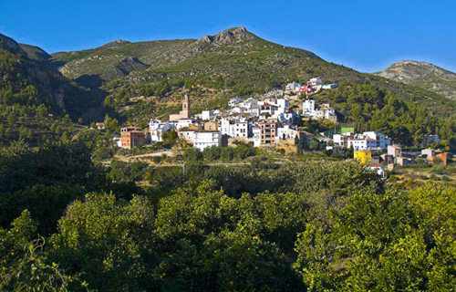
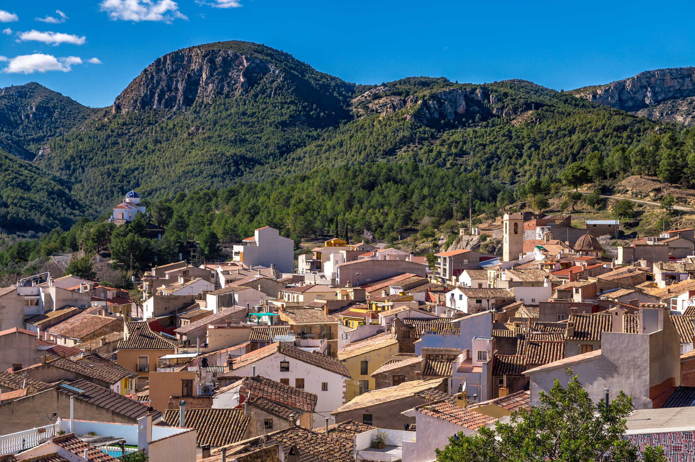
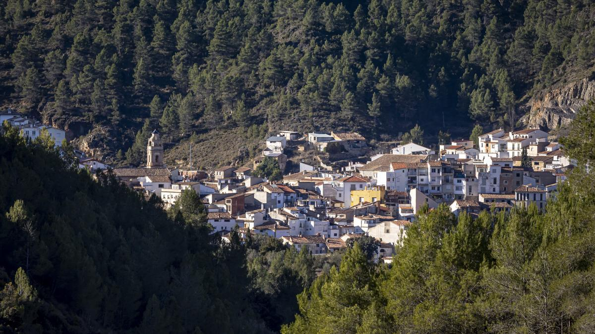
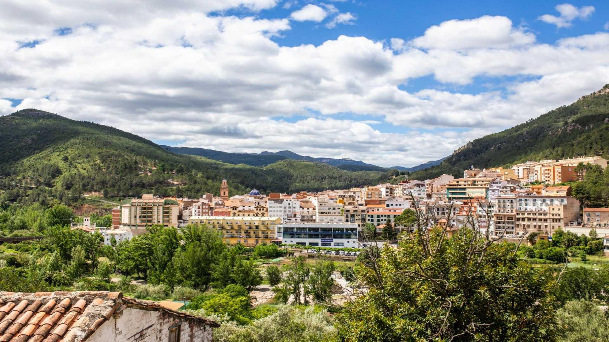
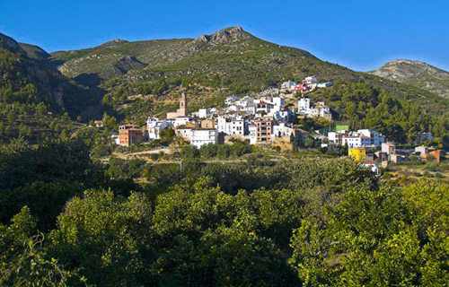
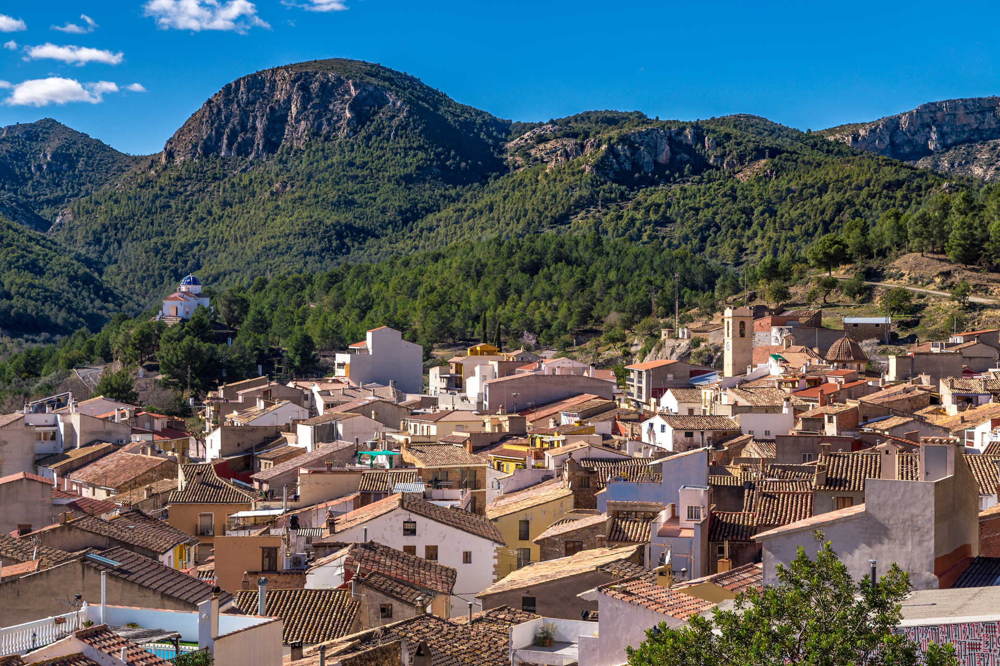
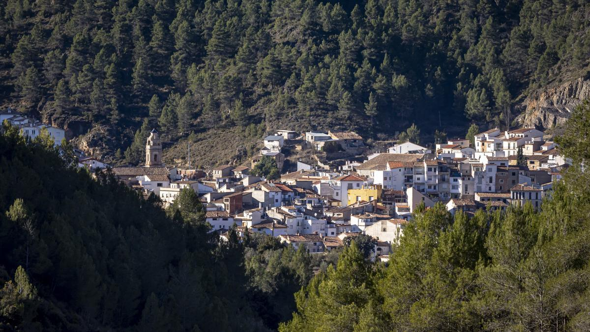
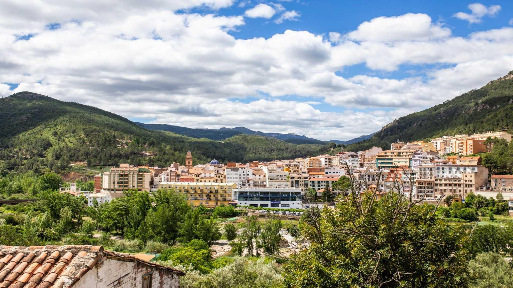
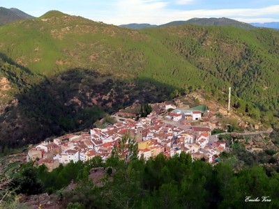
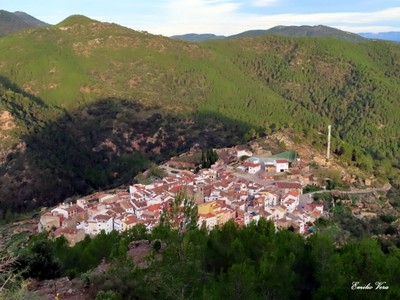

Plan de Acción Territorial del Alto Mijares
Participa en la construcción de un futuro sostenible para nuestra comarca.
Descubre el territorio, conoce el plan y aporta tus ideas.
Participa en la construcción de un futuro sostenible para nuestra comarca.
Descubre el territorio, conoce el plan y aporta tus ideas.
El Plan de Acción Territorial (PAT) del Alto Mijares es un documento estratégico que tiene como objetivo organizar y orientar el desarrollo de la comarca de manera sostenible. Busca proteger y poner en valor el paisaje, los recursos naturales y el patrimonio cultural, al mismo tiempo que fortalecer el mundo rural y mejora la calidad de vida de sus habitantes. A través del PAT se identifican las necesidades del territorio y se proponen actuaciones concretas para fomentar la actividad económica, social y cultural, promoviendo la participación de la ciudadanía para construir un futuro equilibrado y respetuoso con el entorno.
El PAT analiza las características de cada municipio y zona del Alto Mijares, evaluando sus fortalezas, oportunidades y desafíos. Con esta información se definen líneas de actuación específicas que buscan preservar los recursos naturales y culturales, impulsar el turismo sostenible, mejorar las infraestructuras y servicios, y apoyar iniciativas económicas que respeten la identidad local.

El Alto Mijares es una comarca de gran riqueza natural y cultural, formada por montañas, bosques y ríos que configuran un paisaje único. Sus pueblos mantienen tradiciones vivas, patrimonio arquitectónico y una estrecha relación con el medio rural, que constituye la base de su identidad. En este primer visor se pueden observar la Infraestructura Verde, Afecciones, Red Primaria y Actuaciones Comarcales que resultan del estudio del territorio.
El PAT pone el foco en la preservación de estos valores, promoviendo la conservación del medio ambiente y la dinamización de actividades compatibles con el entorno, como el turismo sostenible, la agricultura de calidad o la gestión forestal responsable. El paisaje se entiende no solo como un recurso natural, sino también como un elemento que refuerza la cohesión social y el sentido de pertenencia de quienes viven en la comarca.
Como resultado del estudio exhaustivo que se ha hecho en el territorio, se ha llegado a la siguiente propuesta de Zonificación, mostrada en el mapa interactivo.
| Lun | Mar | Mié | Jue | Vie | Sáb | Dom |
|---|
El análisis territorial realizado para el PAT permite identificar los principales puntos fuertes y débiles de la comarca:
Envíanos tus comentarios o propuestas para mejorar.
Completa el formulario con tus comentarios, observaciones y alegaciones.


.jpg) 









 

Aquí puedes acceder a todos los documentos relacionados con el Plan de Acción Territorial del Alto Mijares: memorias, planos de ordenación, informes, etc.
Al permitir el acceso a toda la población se busca asegurar la transparencia y poner a disposición de la ciudadanía, de manera sencilla, toda la información relacionada con el proceso.